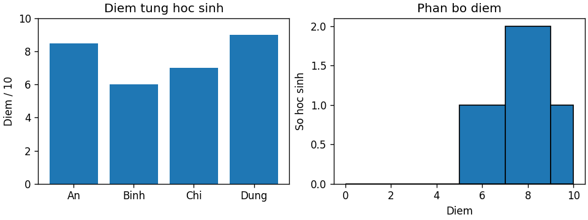

Biểu đồ điểm từng người có trả lời phân bố điểm của lớp không?
bin_count = số mẫu thuộc khoảng đã công bố
{
"values": [
0,
5,
7,
9,
10
],
"edges": [
0,
5,
7,
9,
10
]
}[ 1, 1, 1, 2 ]
import numpy as np
import matplotlib.pyplot as plt
# Cùng dữ liệu nhưng hai biểu đồ trả lời hai câu hỏi khác nhau.
names = ["An", "Binh", "Chi", "Dung"]
scores = np.array([8.5, 6.0, 7.0, 9.0])
fig, axes = plt.subplots(1, 2, figsize=(8, 3), layout="constrained")
axes[0].bar(names, scores)
axes[0].set(title="Diem tung hoc sinh", ylabel="Diem / 10", ylim=(0,10))
axes[1].hist(scores, bins=[0,5,7,9,10], edgecolor="black")
axes[1].set(title="Phan bo diem", xlabel="Diem", ylabel="So hoc sinh")
fig.savefig("demo_plot.png", dpi=120)
plt.close(fig)
print("Điểm trung bình:", scores.mean())
print("Số mẫu:", len(scores))print("Biểu đồ đã lưu: demo_plot.png")Điểm trung bình: 7.625 Số mẫu: 4 Biểu đồ đã lưu: demo_plot.png

Đếm mỗi bin [edge_i, edge_i+1), riêng bin cuối bao gồm edge cuối. Values nằm trong toàn khoảng.
{
"values": [
0,
5,
7,
9,
10
],
"edges": [
0,
5,
7,
9,
10
]
}Trả loại biểu đồ: compare_categories→bar; distribution→histogram; two_numeric→scatter; sequence_over_time→line.
{
"questions": [
"compare_categories",
"distribution",
"two_numeric",
"sequence_over_time"
]
}Đếm mỗi bin [edge_i, edge_i+1), riêng bin cuối bao gồm edge cuối. Values nằm trong toàn khoảng.
Trả loại biểu đồ: compare_categories→bar; distribution→histogram; two_numeric→scatter; sequence_over_time→line.
Tính mean theo group; group được chuyển thành chuỗi trong keys output.
Vẽ cùng dữ liệu bằng bar và histogram; viết mỗi hình trả lời câu hỏi gì.